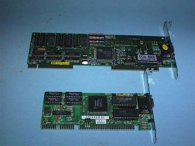
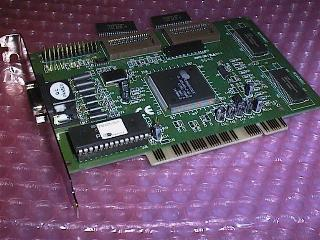

If you would like to see how this is done look at you Monitor or Television set with a magnifying glass and you will see for yourself that a white screen is actually made up of red, green, and blue dots.
The electron beam when it strikes the phosphor is turned on and off to produce dots (called Pixels) on the screen. Each pixel may cover several of the dot or stripe groups mentioned above.
The pixel size is a function of the image resolution being displayed on the screen. You can use the same monitor to display a 640x480 pixel image in one mode, and a 1,024x768 image in another. The screen stays the same size, so the pixels in the second mode have to be smaller since there are more of them on the same screen. The phosphor dots do not change size when you change display resolutions, they are physical feature of the monitor. A monitor with a smaller dot pitch, the distance between the phosphor dots, will have a finer "grain" and will be able to produce sharper images at higher resolutions than a monitor with a larger dot pitch. The pixel size for a given resolution on a given screen size is the same, no matter what the dot pitch. When talking about the dot-pitch of a modern VGA monitor, the largest dot pitch that should be considered is 0.28mm.
MDA provided only 80 characters by 25 lines character mode only
The Hercules Graphics Card (HGC) provided :
Colour Graphics Adaptor (CGA) in Character Mode provided :
Colour Graphics Adaptor (CGA) in Graphics Mode provided :
The resolution of PC Video Systems has been rising steadily since those early days. The standard (Generic) VGA display has a 640 by 480 resolution. This equates to 307,200 pixels per screen. The growing acceptance of a Graphical User Interface has increased the demand for higher resolutions and now 800 by 600 (480,000 pixels) is the most common. The fall in price and resultant increase in the popularity of 17 inch monitors has meant 1,024 by 768 resolution (786,432 pixels per screen) and 1,280 by 1,024 (1310,720 pixels) are now supported by modern Video Interface cards.
The CGA display in 640 by 200 Graphics mode consisted of 128,000 pixels. In two-colour mode this required 16,000 bytes of Video RAM, 128,000 pixels (one bit per pixel) divided by 8 to get back to bytes. Four colours require two bits per pixel and so the same 16,000 bytes of Video RAM could only provide a resoultion of 320 by 200 in four-colour mode.
The CGA video system can display more colours in Character Modes because the information in the Video RAM represented characters rather than individual pixels. In 80 character by 25 line Character Mode, a CGA display requires 2000 bytes of Video RAM to hold an ASCII code for each character, and a further 2000 bytes of Video RAM to hold an Attribute byte to control the colour of each character. The ASCII Codes and Attribibute Bytes are stored in alternate locations in the Video RAM. Each character position on the screen in character mode requires two bytes of information, one for the ASCII code for the character to be displayed, and one for the attribute byte that determines the characters character.
The Generic VGA standard provides 16 colours at 640 by 480. It takes four bits to describe the colour of each pixel. Multiply these four bits by the 307,200 pixels in a 640 by 480 display, divide by 8 bits to get how many Bytes are required and you have 153,600 bytes of Video RAM is required to store the information for a one screen display. The first VGA Video Cards were equiped with 256K bytes of Video RAM and so they could display only 16 colours in 640 by 480 resolution. 256 colours (eight bits per pixel) requires 307,200 bytes of Video RAM.
Sixteen colours are not enough for modern Windows applications and so a minimum standard for VGA is 256 colours. The VGA standards provide for modes with thousands or millions of colours. "High colour" use 15 bits or 16 bits per pixel, and this means 32,768 or 65,536 simultaneous colours, respectively. "True colour" uses 24-bits per pixel and provides 16.7 million colours to each pixel on the screen.
The original VESA standard for Super VGA was 800 by 600 resolution at 16 colours (4 bits per pixel) and this requires 240,000 bytes of Video RAM. A 1,024 by 768 true-colour image (24 bits per pixel) requires 2,359,296 bytes of Video RAM.
Part of the problem is that monitors must update rapidly enough so that things that move on the screen appear to move smoothly. Twenty to thirty images per second may seem fast, but there's another problem that makes it not fast enough. Phosphors glow after they've been excited by the electron beam, and they start to fade as soon as the beam passes by. Some monitors use phosphors that fade more slowly than others. The old monochrome monitors used long persistence phosphors, but most monitors today rely on short to medium persistence phosphors.
Many people don't realise it, but screen flicker is more pronounced if you look off to the side of a monitor, rather than directly at the centre of the screen. That is largely because the human eye has two kinds of receptors - rods and cones. Cones are responsible for colour vision, but need a fair amount of light to work. These cells are concentrated in the centre of the retina, at the centre of your field of vision. Rods only perceive images in black-and-white, but are more sensitive to dim light levels and to motion. There are no rods at the centre of your field of vision, so you are most sensitive to moving images in your peripheral vision.
As it turns out, with the phosphors in use in most colour monitors these days, most users can notice the flicker with screens that are updated as frequently as 60 times per second. This is also referred to as the refresh rate. We now more often than not, operate the PC Video system with refresh rates of 70 to 100 times per second.
One is the Horizontal Scan Rate, or how often the electron beam leaves the left edge of the image to paint a horizontal line. This rate is directly affected by two factors, the Vertical Scan Rate and the resolution. If you have a faster scan rate and/or a higher resolution, the Horizontal Scan Rate will also have to be higher.
Lets consider a generic VGA image with a 60Hz refresh rate. There are 640 pixels across the screen and 480 pixels down the screen to make up an image. The electron beam must scan across the screen 480 times to reach all the phosphors on the screens surface. Each of these 480 lines must be scanned 60 times a second, which means that the beam must scan 28,800 lines a second (480 lines times 60 per second). There is also time taken up in having the beam move from the bottom right corner back up to the upper left before it starts again (Retrace). The scan rate is a bit faster than this to take into account the time it takes for the beam to Retrace back to the start of the next line.
The Horizontal Scan Rate for a generic VGA display with a Verical Scan Rate of 60 Hz. is 31.5KHz..
Increase the resolution to 800 by 600 with the same 60Hz Vertical Scan Rate, and you will find the Horizontal Scan Rate will be 37.88Khz. This is more than 20 percent faster than the requirement for generic VGA. Super VGA is more demanding on a monitor's Horizontal Scan circuit than the generic VGA signal.
Some Video Interface cards provide a Super VGA Video (800 by 600) mode that uses a 56Hz refresh rate and a horizontal scan rate of 35.16KHz. This mode will allow most older non Super VGA monitors to operate at 800 by 600 resolution.
A Super VGA monitor is one that operates at minimum Vertical Scan Rate of 72Hz and Horizontal Scan Rate or 48KHz. The Video Electronics Standards Association (VESA) calls for a 72Hz Vertical Scan Rate for 800 by 600 and a 48KHz Horizontal Scan Rate. VESA considers a 72Hz refresh rate the minimum required for flicker free operation.
Many people with 15-inch and larger screens are now using 1,024 by 768 or higher resolution modes. At 60Hz refresh, this calls for a horizontal scan rate of 48.3KHz, and at 70Hz refresh, the horizontal scan rate has to be 56.4KHz, nearly double the scan rate of the original generic VGA display.
What bandwidth did a monitor need to have to handle a simple CGA four-colour image?. There are a number of ways to estimate required bandwidth for a given signal, but a rule of thumb is to multiply the number of pixels by the Vertical Scan Rate, and then add 50 percent to the result. For the original CGA display, we multiply 320 by 200 by 60, which gives 3,840,000, and then multiply that by 1.5 to give us 5,760,000Hz, or 5.76MHz. This means that the monitor needs to be able to turn the electron beam on and off more than 5 million times per second in order to display the image correctly. At a resolution of 640 by 200 a CGA video system required a video bandwidth of about 11Mhz.
A 640 by 480 VGA screen - 640 by 480 pixels times 60Hz times 1.5 yields a bandwidth requirement of 27.6MHz.
Super VGA 800 by 600 image - with a 72Hz refresh rate, and the required bandwidth is 51.8MHz, nearly 10 times that of the CGA display requirement. At 1,024 by 768 at 70Hz refresh, you need a bandwidth of at least 97.1MHz.
In a video display, insufficient bandwidth is relatively easy to identify. The transition for the beam from off to on should be essentially instantaneous. Where the signal is low, the pixel will be off, and where the signal is high, the pixel will be on. A perfect signal will have this square shape, creating a sharp transition between off and on pixels. On the other hand, the image suffers when a monitor tries to display a signal that exceeds its bandwidth. This results in a smearing of the transition between off and on pixels. Instead of having off and on pixels adjacent to each other, you get a series of pixels that shade from black to white, or white to black.
This effect is easy to spot. All you need to do is fill your screen with black-and-white, closely spaced vertical lines, and examine the transitions. Simply create a text file that fills your screen with capital M characters. You will get white letters on a black background under DOS, or you can use the Windows Notepad to get black letters on a white background. In either case, you should look for a sharp transition from black to white and back again. If the lines of text appear to have a Grey background compared with the white or black background between the lines, then your monitor is not completely up to handling that resolution image.
The solution was to use Analog Video Signals. VGA introduced the use of Analog Video Signals. The relative brightness of each colour component for a given pixel is specified by varying the voltage on a single wire. With just one lead each for the Red, Green, and Blue components, the Video Adaptor card can produce a nearly infinite range of colours. The Video Card requires Digital to Analog (DAC) converters to convert the binary colour information stored in the Video RAM into the Analog Signals required by the Video Display Monitor. Here is a typical block diagram of a VGA Colour Monitor.
Note MDA and CGA Video Displays only had to handle a single Vertical Scan Rate, and a single Horizontal Scan Rate. Later Video Systems generate different Scan Rates depending on the Video Mode they are operated at.
The first VGA monitors had to operate at Scan Frequencies, of 60 Hz Vertical and 31.5KHz Horizontal. The original Super VGA resolution of 800 by 600 pixels, needed Scan Frequencies of 60 HZ and 37.88 KHz. Many older low cost VGA monitors could not operate at the required Scan Rrequencies for even generic Super VGA. In the early days of VGA Standards, this was overcome by some Video Interface Card manufacturers by the use of non-standard Super VGA Video Modes, and Scan Frequencies. Scan frequencies of 56 Hz and 35.15K Hz was one solution.
All of these Video Systems used a DB9S connector on the back of the Video Interface Card, and operated with fixed Scan Frequencies. Monitors designed for use with each Video Standard only had to operate at one set of Scan Frequencies. As the Video Standards proliferated, Multi-System monitors (trade marks of Multi-Scan and Flex-Scan) became available that could be used on a range of Video Systems, but they were expensive.
The VGA Video System has changes the rules and today a VGA Video Display Monitor can be called upon to operate over a wide range of Scan Frequencies, depending on the Video Mode (resolution) required. Cheaper VGA Video Display Monitors can only operate over a narrow range of Scan Frequencies and so will only operate at some VGA modes. VGA monitors require three Analog Video Signals and two Sync. Signals.
VGA uses a special three row DB15 connector, referred to as a Miniature DB15S connector.
Multi-Scan and Flex-Scan multi-standard monitors had to cope with both the TTL and Analog Video Signals and may have switched automatically between these standards or may have had a TTL/Analog switch. This type of Video Display Monitor usually used a DB9S connector so it could connect to the old Digital (TTL) Video Interface Cards (MDA, HGC, CGA, and EGA), and required an adaptor to connect to VGA Video Inteface Cards.
Interlacing is only an issue for 1024 by 768 and above modes. For the average Windows user who has a 14 or 15 inch display, 800 by 600 resolution is about optimum for the size of the display and this mode can be generated without interlacing, on the ower cost VGA Monitors.
A typical block diagram of a VGA Colour Video Display Monitor.
Interlaced Scanning Interlacing can be used to provide 1024 x 768 resolution on Low Cost VGA Monitors. Interlacing is a process where the screen is scanned twice to build up each image. The second scan writes its lines between the lines written by the first scan. Interlacing is used in our domestic Television system to double the number of lines in the display - each scan writes 312½ lines. The overall effect is a picture that has 625 lines.
| VGA Mode | Resolution | Horiz. Scan Rate (in KHz) | |
|---|---|---|---|
| Standard VGA | 640 x 480 | 31.5 Khz | |
| Super VGA | 800 x 600 | 31.5 to 35.2 Khz | |
| Extended VGA | 1024 x 768 | 35.5 (interlaced) | 48.0 (non interlaced) |
| Ultra Ext VGA | 1280 x 1024 | 48.2 (interlaced) | 64.0 (non interlaced) |
Here is a description of some of the STATE OF THE ART video options that have been available for DOS computers over the past few years. This area of technology is advancing very rapidly and what is todays state of the art may well be obsolete in no more than six month's.
Continuous Edge Graphics (CEG)
This is a good example of how technology ages very quickly, it enjoyed only about six months of popularity. Edsun Laboratories, developed its continuous-edge graphics (CEG) chip to increase the number of colours on-screen with no memory penalty. This chip exchanged 32 of VGA's 256 colours for mix values, which indicate the ratio for "blending" adjacent colour dots. The result was smooth transitions between colours at their borders or edges, colours that blend together gradually, with a minimum loss of sharpness. The drawback of the CEG system was that your programs needed to know the chip's special codes for colour mixing, and few applications take advantage of it.
The CEG chip replaced the standard Digital to Analogue Converter (DAC) chip on the VGA card. The CEG option provided significantly improved images, by removing most of the `staircasing' or `jagged edges' normally seen. The CEG technology was especially suited to CAD and Desktop Publishing or any other graphically intensive software applications.
Sierra Hi-Colour
Another advance in digital to analog (DAC) chips was the Hi-colour standards. Two Hi-colour standards exist, 15 bit colour, giving 32K simultaneous on-screen colours and using 5 bits for each primary colour. The 16 bit version, giving 64K colors, uses 5 bits for red and blue, and 6 bits for green. This follows the 16-bit colour standard set by IBM's XGA system. In either case, 2 bytes of Video RAM is required for every pixel on the screen.
True-Colour
True-Colour provides 16,700,000 colours. A 24 bit word is used to control the colour. and the amount of Video RAM required can be found from the horizontal resolution times the vertical resolution times the number of bytes required to define the colour (in this case, 3). True-Colour at 640 by 480 resolution requires 921,600 bytes of Video RAM.
The use of Hi-colour and True-colour DAC chips originally had two draw backs. Firstly many more colours require much more Video RAM than does 256 colours at the same resolution. Secondly, graphics operations take considerably longer, simply because there are many more bytes of Video RAM to be processed. These problems have been overcome by the technology introduced by the next topic.
The Co-processor or Accelerator chipset on the Video Adaptor card generates the image, relieving the computers Processor of all the effort of writing the data for the image pixel by pixel to the Video RAM.
The difference between the Co-processor and the Accelerator is program-ability. The Accelerator is a fixed-function Co-processor, with built-in abilities to handle specific graphics actions related to particular programs and applications. The Co-processor can be programmed to do anything, the Accelerator is hard-wired to do certain graphics operations.
Early in 1993 the VESA Local Bus started to appear in lower priced computers and Intel announced its competing PCI Local Bus. The Local Bus operates at 33 MHz which is about four times the speed of the ISA Bus, and as it is a 32 bit Bus rather than a 16 bit Bus, it would appear to provide up to eight times faster data transfer. As it turns out the processor may then become the bottle neck in the system and figures like two to three times are often more realistic, without Video Co-processor or Accelerator techniques. Combine Local Bus and Accelerating techniques and we can get performance boosts as much as 30 to 100 times the speed of a conventional ISA bus, frame buffer, VGA Video Adaptor.
|  A VESA Bus card and an ISA Bus card compared |
 A Trident PCI Bus VGA Video Interface Card |
The following table illustrates how much Video RAM is required for the various Resolution / Colour Depth combinations.
| Resolution | Colour depth (bits) | Number of colours | RAM required on board |
|---|---|---|---|
| 640x480 | 4 | 16 | 256 K |
| 640x480 | 8 | 256 | 512 K |
| 640x480 | 16 | 65,536 | 1.0 Meg |
| 640x480 | 24 | 16,777,216 | 1.0 Meg |
| 800x600 | 4 | 16 | 256 K |
| 800x600 | 8 | 256 | 512 K |
| 800x600 | 16 | 65,536 | 1.0 Meg |
| 800x600 | 24 | 16,777,216 | 1.5 Meg (2 Meg) |
| 1024x768 | 4 | 16 | 512 K |
| 1024x768 | 8 | 256 | 1.0 Meg |
| 1024x768 | 16 | 65,536 | 1.5 Meg (2 Meg) |
| 1024x768 | 24 | 16,777,216 | 2.5 Meg (4 Meg) |
| 1280x1024 | 4 | 16 | 1.0 Meg |
| 1280x1024 | 8 | 256 | 1.5 Meg (2 Meg) |
| 1280x1024 | 16 | 65,536 | 2.5 Meg (4 Meg) |
| 1280x1024 | 24 | 16,777,216 | 4.0 Meg |
| 1600x1200 | 4 | 16 | 1.0 Meg |
| 1600x1200 | 8 | 256 | 2.0 Meg |
| 1600x1200 | 16 | 65,536 | 4.0 Meg |
| 1600x1200 | 24 | 16,777,216 | 6.0 Meg |
| The PC Video system | PC Video standards | Back to the opening index | Book three index |
{kind=link}
{kind=link}
{kind=link}
{kind=link}
{kind=link}